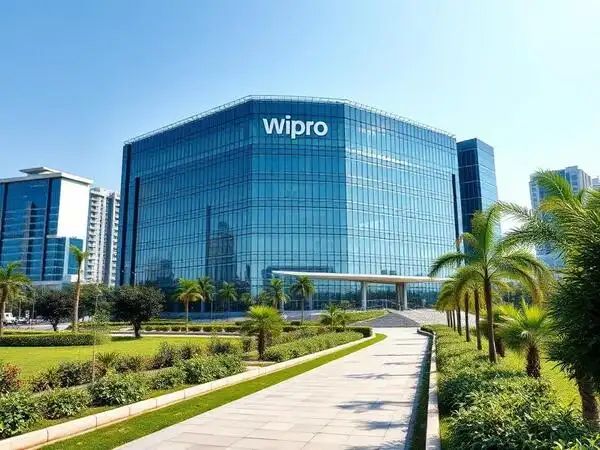
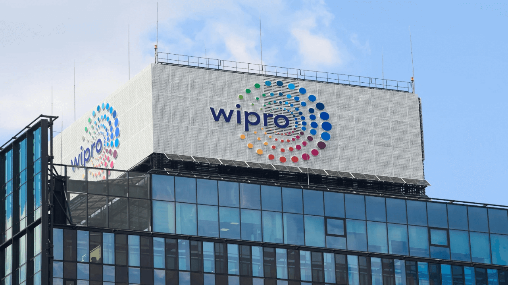

Service


Wipro Limited is a leading global AI-powered IT services, consulting, and business process company. Headquartered in Bengaluru, it employs over 240,000 people across 65 countries. Originally founded in 1945 as a vegetable oil manufacturer, it transitioned into the IT sector in the 1980s
For the quarter ending June 30, 2026, the company recorded core IT services revenue of $2.61 billion, posting significant large deal bookings of $1.6 billion. Wipro operates through several global business lines focusing on digital transformation
- Wipro FullStride Cloud
- Wipro Enterprise Futuring
- Wipro Engineering Edge
- Wipro Consulting